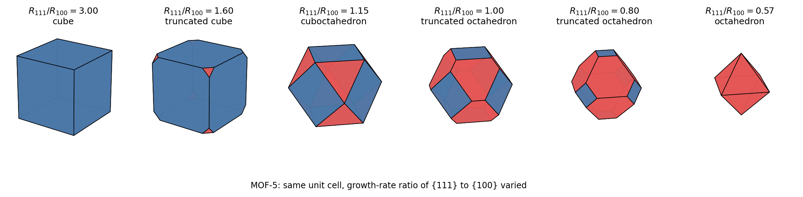
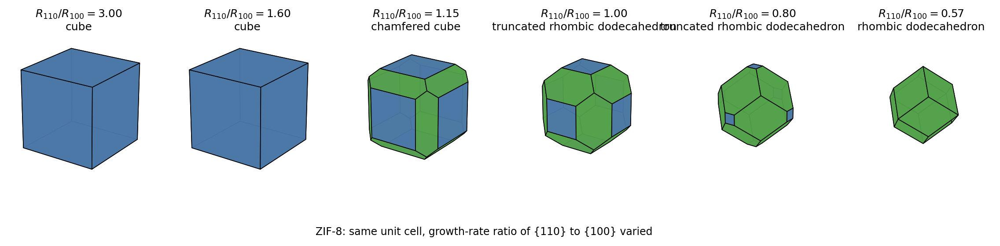
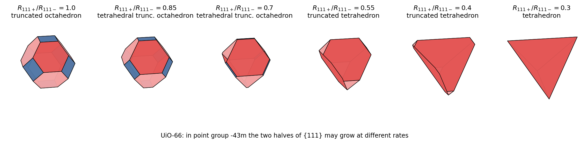
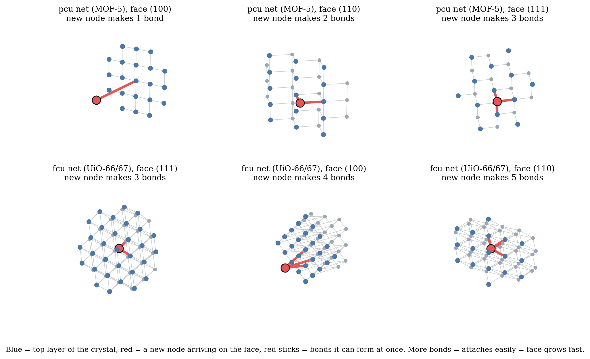
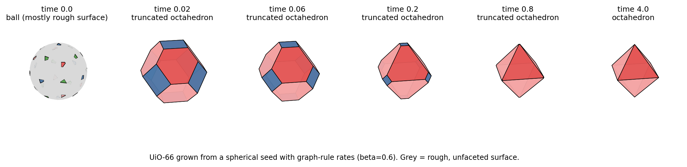

1The Panel's Second Question
After Panel Review 1 the panel set a new task, written by hand: “We have a MOF (established) with a specified unit cell dimension which gives a unit cell structure. Is it possible to generate at least a few morphologies from the given unit cell structure?” They added that the result is known chemically, since laboratories grow the same MOF in different shapes, but that a mathematical and computational demonstration is missing. This page reports Phase 1 of that work.
2From Unit Cell to Crystal Shape: the Method
Four steps, each with a stated rule. Every concept is taught from scratch on the Learn page, and every rule is proved on the Mathematics page.
1. Find the true symmetry
All four CIF files are stored in space group P1, with no symmetry written. The space group is found with spglib, with and without hydrogen atoms and at tolerances from 0.001 to 0.1 Å, and the structure is converted to its conventional cell. The result is in the table in the results section below.
2. Decide which faces can exist
A family of planes (hkl) is systematically absent when the space group contains an operation (R, t) with hR = h and h·t not an integer. For a centred lattice this gives: F-centred, h, k, l all even or all odd; I-centred, h + k + l even. When (hkl) is absent the true repeat distance is that of the first allowed multiple n(hkl), so the effective spacing is deff = dhkl/n, with dhkl = a/√(h²+k²+l²) for a cubic cell.
3. Build the shape as a polytope
A crystal whose faces move outward at normal growth rates Rf ends up as the convex polytope P = {x : nf·x ≤ Rf for every face f}. Fast faces grow themselves out of existence, so the crystal is bounded by its slowest faces. The same construction serves three growth-rate models: BFDH (R ∝ 1/deff, from the lattice alone), Wulff (R ∝ surface energy, Phase 4), and the graph rule below.
4. Measure the shape
Each shape is reduced to numbers: face and vertex counts, sphericity Ψ = π1/3(6V)2/3/A, the asphericity κ² of the gyration tensor, and the face-normal order parameters Ql, computed from the area fractions w and unit normals of the faces as Ql² = Σij wiwjPl(ni·nj).
3Shape Explorer: One Unit Cell, Many Morphologies
Choose a structure and move the growth-rate sliders. The shape, its name and every number beside it are recomputed in your browser by mof_morphology.js, an implementation written independently of the Python package and checked against it by tests/test_morphology.js. Drag the shape to rotate it.
4Results for the Four Demonstration MOFs
The symmetry column comes from spglib (Python). Every other number in the two tables below is computed when this page loads.
The named shapes appear at exact thresholds
With only {100} faces at distance 1 and {111} faces at distance t, direct geometry gives a cube for t ≥ √3, a cuboctahedron at t = 2/√3 and an octahedron for t ≤ 1/√3, with the truncated cube and the truncated octahedron in between. The table checks this numerically.

code/morphology/run_phase1.py.Source: code/morphology/run_phase1.py; data: code/morphology/results/phase1_results.json.

Source: code/morphology/run_phase1.py; data: code/morphology/results/phase1_results.json.
A tetrahedral morphology, allowed by the ordered UiO-66 structure
In point group -43m the eight {111} faces split into two sets of four that no symmetry relates, so they may grow at different rates. Slowing one set gives a truncated tetrahedron and then a tetrahedron. The panel mentioned tetrahedral shapes specifically.

Source: code/morphology/run_phase1.py; data: code/morphology/results/phase1_results.json.
5The Graph Rule: Counting Links Selects the Shape
BFDH uses the lattice alone, so it gives the same truncated octahedron for MOF-5, HKUST-1 and UiO-66. The framework's connectivity distinguishes them.
The attachment number chkl is the largest number of links a node in the next layer forms with the crystal below a plane parallel to (hkl). A node that forms more links is held more firmly, so that face grows faster. We set R = eβc, where β plays the role of link energy divided by kT. Chen et al. used this counting argument for UiO-67 (Matter 2020), stating 5, 4 and 3 links on (110), (100) and (111).

Source: docs/reports/morphology_primer_source/figs4.py; data: docs/reports/morphology_primer_source/fig/attach.json.

Source: code/morphology/run_phase1.py; data: code/morphology/results/phase1_results.json.
6Against Experiment and Prior Work
Published experimental shapes for each structure, and whether our family contains them. Items marked “checked” were verified against the paper or its supplementary information; the others still need checking before they are cited.
| Structure | Reported shapes and conditions | Source | In our family? |
| MOF-5 | Cubes as synthesised; octahedra grown by changing the Zn : H2bdc ratio (AFM) | Cubillas, Anderson, Attfield, Chem. Eur. J. 18, 15406 (2012), checked | Yes, both end points; the cube is the graph-rule shape and the additive-free habit |
| HKUST-1 | Cube, then cuboctahedron, then octahedron as added salt concentration rises | Liu, Yang, Jin, Sun, CrystEngComm 18, 4127 (2016), checked | Yes, the whole family |
| UiO-66 / UiO-67 | Octahedra (halide-assisted); ball, cuboctahedron, octahedron for Hf-UiO-67 over time | Ceballos et al., Nanoscale (2022), checked; Chen et al., Matter 2, 1651 (2020), read in full | Yes; the octahedron is the graph-rule shape, but it is the modulated, not the additive-free, habit |
| ZIF-8 | Cube, truncated rhombic dodecahedron, rhombic dodecahedron as CTAB changes the {100} : {110} ratio | Liu et al., Nano Lett. 20, 1774 (2020), checked; Pan et al., CrystEngComm (2011), checked | Yes, the whole family |
Prior work. A literature search found one direct precedent: Pan et al. (2011) predicted ZIF-8 shapes from attachment energies in Materials Studio. Single-facet surface energies exist for ZIF-8 and HKUST-1, and Liu et al. (2020) explained the ZIF-8 cube to dodecahedron switch by the different coordination of Zn on the two facets. The search did not find BFDH applied across several MOFs, shape families measured with descriptors across several MOFs, link counting across several nets, or a link from the periodic graph to the Hartman–Perdok face classes. That is a search result, not proof of novelty; a Scopus or Google Scholar check is still to be done.
7Limits and Next Steps
- The morph families vary growth rates by hand. Phase 1 shows which shapes a unit cell allows, not which one a given synthesis produces.
- Non-convex shapes (concave and hollow octahedra) and the shapes of a different phase (the Hf12 nanoplates of Chen et al.) are outside the polytope model.
- Plates and rods of an undistorted cubic phase need an external cause that breaks the symmetry, such as a surfactant or a substrate; this page does not model that. Plates and rods that follow from a changed unit cell are treated on the Cell Deform page.
| Phase | Content | State |
| 0 | Primer, literature search, experimental shape references | Done |
| 1 | Unit cell to symmetry, allowed faces, BFDH shape, morph families, descriptors; 14 validation checks | Done |
| 2 | Mathematical write-up: the absence rule, the polytope and its symmetry, continuity of the morph, the exact thresholds, the κ² result, the graph propositions | Done: Mathematics |
| 3 | Nets from the CIFs, attachment numbers and broken-bond energies for all four nets, Hartman–Perdok F/S/K classes from slice periodicity rank | Done: Graph Faces |
| 1b | Deformed unit cells: plates, equant crystals and rods from changed cell parameters | Done (BFDH only): Cell Deform |
| 4 | Force-field (UFF) cleavage energies of every face and the Wulff shapes; bond-cost sensitivity | Done (unrelaxed, no electrostatics): Surface Energy |
| 4b–4d | Experimental dataset (134 records, 35 papers, 12 MOFs); CHGNet slab energies; BFDH×Wulff blend; every method scored against experiment | Done: Experiment, Hybrid |
| 4f | Spectrum of the first half tested against crystal shape; box-counting dimension of crystal particles | Done: Spectrum ↔ Shape |
| 4e | DFT check of the faces where CHGNet and the force field disagree | Planned (see Progress) |
| 5 | Growth model with solvent, modulator and temperature; more MOFs with known shapes | Planned |
| 6 | Final paper on the morphology work | Planned |